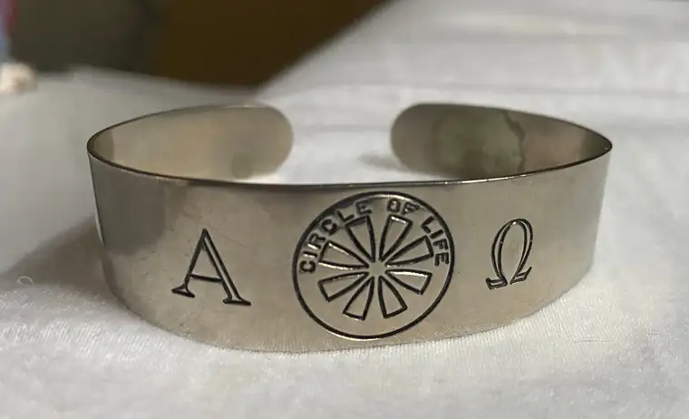

My sister, Camille, and I were putting finishing touches on a belated 80th birthday party for our sweet mom, set for the next day, when Camille announced, “I have a little surprise for you!”
“For me?” I felt a bit sheepish; I hadn’t thought to bring her anything.
“Here,” she said, handing me a beautiful little box. I opened it up to find a shining silver bracelet with engraved Greek letters “Alpha” and “Omega,” and in the middle of them, a circle with the words, “Circle of Life.”
“It’s pretty,” I said.
“There’s a story behind it,” she said. “But first, look at the date engraved on the side.”
“Jan. 22, 1973,” I read.
“Does that mean anything to you?” she asked. At that late hour, nearly midnight, I couldn’t recall any connection to the date. “Roe v. Wade?” she said.
“Oh, of course!”
Camille then proceeded to tell me how she’d acquired the bracelet, and all that it meant.
She’d had a fairly routine medical procedure just days earlier, and it was then that the bracelet had come into view. Soon after checking in, the prep nurse began taking vitals, asking questions, and giving instructions. While she worked, they visited. Camille learned that the nurse worked at that hospital, in Hazen, a few times a week, spending weekends at an emergency room in Bismarck.
“She had several different bracelets on her arm, but the one that caught my eye was a thick, silver band with a couple Greek letters etched in it, on either side of a circle emblem,” Camille shared. “I thought perhaps she was in some kind of nurse’s sorority.”
Curious, she asked the nurse, “What is your bracelet for?” and she explained that she’d found it at a rummage sale at St. Joseph’s Church in Mandan. At the time, she didn’t know anything about it, only that she liked how it looked. Later, she wondered more about the symbols and wording, so did some research.

The nurse learned that the emblem had to do with saving the lives of unborn babies. At this point in the conversation, Camille recalled that Alpha and Omega stood for “the beginning and the end, as in Jesus.” Learning the bracelet had to do with saving lives, the nurse continued, made her appreciate it even more. She then showed Camille the date, noting that was the day abortion was legalized in our country.
“I found out that there were a certain number of these bracelets made,” the nurse added. “They were meant to be worn until the new law was overturned. And here we still are.”
Camille said she had never heard of the bracelets, nor their intent to remind people to pray for the babies and an end to the killing. “I told her I was amazed, but I was not quite six when this law came to be, so would not have had any awareness of what was happening in our country then—or about bracelets and prayer.”
Wondering if the bracelets could still be found, Camille asked the question out loud, adding, “I know my sister would really like one.”
“Oh, what does your sister do?” the nurse asked.
“She’s a writer. But she lives in Fargo and prays outside the abortion clinic every Wednesday—for the unborn babies and expectant mothers.”
At that, the nurse perked up, exclaiming, “I want her to have it!” Removing it from her wrist, she handed the bracelet to Camille. “Please give it to her.” Elated, Camille shared that she would; in fact, she’d be seeing her soon.
After her anesthesia wore off, Camille said, she saw the nurse and remembered the bracelet, thanking her once again, adding, “I can’t wait to give it to my sister!”
The Wednesday after receiving this meaningful gift, I wore it to the sidewalk, and will do so from here on out as I pray for our littlest citizens whose lives are in the balance. The bracelet will remind me that though this fight has been long, it’s not over. And no matter how far away people might be from the sidewalk in Fargo, anyone who cares about this ministry, and these children and their loved ones, can join us in spirit—including my sister, and a nurse in western North Dakota with a generous heart.
[Note: I write about my experiences on the sidewalk Downtown Fargo on Wednesday, the day abortions happen at our state’s only abortion facility, for New Earth magazine — the official news publication of the Fargo Diocese. I hope you find “Sidewalk Stories” helpful in understanding the truth about abortion and how it plays out tragically each week here in Fargo, N.D. The preceding ran in New Earth’s September 2021 issue.]